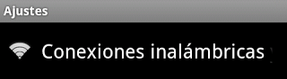
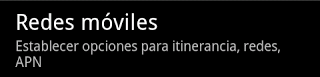
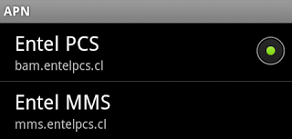
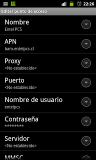

No hay nada más molesto que pagar por un servicio y que te metan a la mala la forma en que debes usar ese servicio. Lo anterior está ocurriendo con el servicio Internet Móvil de Entel, el cual viene por defecto configurado para usar un proxy de Entel, el cual modifica la forma en que se muestran las páginas, incluso inyectando contenido (publicidad) a las páginas que visitamos.
Si omitimos la publicidad, nos encontramos con que el proxy se presenta hacia los sitios como un navegador de escritorio, por lo que los servidores retornarán la versión de escritorio en vez de la móvil, desplegándose en nuestros dispositivos una versión inusable del contenido solicitado.
Para eliminar esta configuración de proxy debemos modificar el APN:
- Accede a Ajustes
- Luego a conexiones inalámbricas y redes
 - Luego a Redes móviles
 - Entramos en APN
- Deberíamos ver las dos conexiones, BAM y MMS. Entramos en la que dice bam.entelpcs.cl
 - Allí dejamos en blanco los campos Proxy y Puerto

{kind=link}
{kind=link}
{kind=link}
{kind=link}
{kind=link}
Con eso ya no tendremos más el molesto proxy.
Update (25/04/2012):
Para que el APN de MMS funcione correctamente con los cambios explicados antes, debemos configurarlo para que usar el proxy y puerto que eliminamos en el APN anterior, quedando así:
{kind=link}